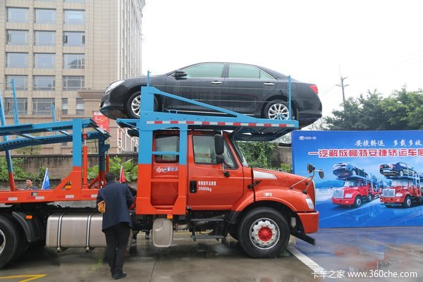
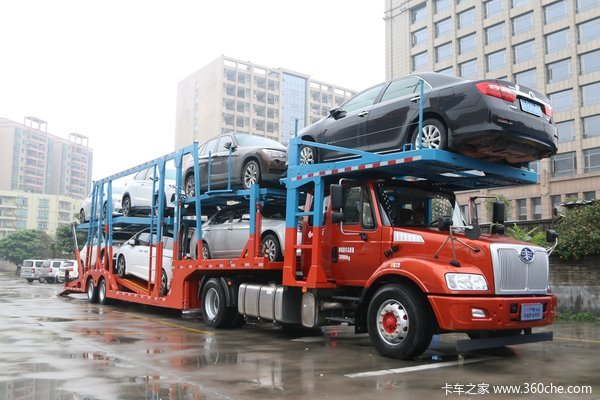

从去年的921新规执行起，轿运车行业作为治理的重点，已经基本淘汰了双排轿运车，而剩下的超长轿运车也会在今年的下半年开始逐步淘汰，直到2018年7月1日前全部淘汰完毕，届时的轿运车市场将会朝着更加标准化的方向发展。与此同时，超长轿运车的淘汰也将会增加大量的轿运车需求。因而在今日，由一汽解放柳州特种汽车有限公司、一汽解放汽车有限公司无锡柴油机厂、深圳广恒通汽车销售有限公司、广州三合物流有限公司以及吉林省晟铭物流有限公司在广州花都联合举办了一汽解放柳特安捷轿运车展示品鉴会，为用户全方位展示安捷轿运车的优势。
从以前的飞机板轿运车运输21台左右商品车，到现在的超长轿运车运输14台左右的商品车，再到以后使用完全标准化轿运车运输6-8台商品车，这个过程中，会产生大量的运输需求，而标准化的轿运车无疑是用户的唯一选择。
安捷长头轿运车优势多 比平头车多装一台
一汽解放柳州特种汽车有限公司是一汽解放全资子公司，依托一汽集团和解放，柳特公司具备完整的中重卡全品系牵引、自卸、载货车整车设计开发和生产能力，看准了轿运车行业的需求，在新国标要求和车辆运输车规范整治大势下推出合规轿运车，共有安捷和金陆两大平台，半挂和中置轴四大系列产品。全系列产品可满足A级，B级，C级轿车，SUV、MPV等多种车型的单装与混装等不同方案，大大提高装载空间的利用率。
来自一汽解放柳州特种汽车有限公司的刘桂波设计师为在场嘉宾介绍安捷长头轿运产品，安捷长头轿运车是由一汽柳特打造的完全符合新1589国标的一款车型，主车基于成熟的安捷牵引车平台打造，经过了各项优化措施，包括降低牵引主车底盘高度以及安装车顶的承载结构，使得主车上能装载一台商品车，并且总高不超高。
安捷牵引轿运车整车的自重不到14吨，一般情况下可以装载7台商品车，比标准的平头轿运车能多装载一台，并且在总长以及高度方面完全符合新规的要求。安捷长头轿运车还配备了气囊悬挂，远程启动及熄火，空档取力等特殊配置。
安捷轿运车搭载的是锡柴的CA6DL2-31E5发动机，最大输出功率达231kW（310马力），最大扭矩1250牛米，通过SCR后处理技术满足国五排放。CA6DL2是国内第一个运用四气门技术，采用低速大扭矩设计，在1300～1500转时输出最大扭矩，在900转时也能输出最大扭矩的80%，经济性和低速性能在国内处于领先水平的中重型柴油机。锡柴在全国拥有1918家授权服务网点可以提供锡柴产品的售后服务，能够满足用户的服务需求。与这款发动机匹配的是法士特的9挡箱或者一汽十挡箱。
此外，安捷长头轿运车还具有维修更便利的优点，长头车维修发动机不需翻转驾驶室，也不需要翻转顶部载货平台，操作方便。得益于长头车优秀的空气动力学，能获得更佳的燃油经济性，长头车空气阻力小，燃油经济性更好，尤其是在高速公路行驶状态下，节能效果更加明显。长头流线型设计，可省油10%-12%。
安捷驾驶室气囊半浮减震、宽体卧铺，在舒适性配置上标配军车空调、配装电动门窗、气囊座椅、遥控中控锁、GPS兼容北斗定速巡航。选装倒车影像功能可大大减少倒车视野盲区，更安全可靠。
广州三合物流有限公司的张总表示，从上世纪90年代初，轿运车开始在中国出现，到了2010年进入了快速发展的阶段，到目前为止，轿车车行业每年为各大汽车制造商运输高达两千万台的商品。作为轿运车行业的其中一员，他表示行业的发展都是从无到有，从乱到治的过程，之前违规超载以及低价竞争，已经让整个行业的健康发展受到了严重的影响。自新GB1589的出台，中置轴牵引车以及标准半挂车成为了行业的新标准，未来轿运车行业的正常竞争、合理利润以及持续发展将会成为整个行业的新态势。
据一汽柳特总经理张总表示，国家从法规上下了很大的决心，要严格整治轿运车行业，到了2018年7月1月前，将会淘汰全部不合规的车型。目前国内符合标准的车有两种，分别是中置轴和牵引半挂车，常规的半挂牵引车，技术成熟而且价格更加经济。目前平头轿运车标准装载6台车，而中置轴可装载8台车，而长头牵引车在常规的情况下能装载7台车。中置轴轿运车由于是个新产品，目前很多用户都在观望中，并且在技术方面相比于成熟的半挂牵引车还有提升的空间，因此安捷长头牵引半挂车相比而言还是具有不少的优势。
一汽解放柳州特种汽车有限公司、一汽解放汽车有限公司无锡柴油机厂、深圳广恒通汽车销售有限公司、广州三合物流有限公司以及吉林省晟铭物流有限公司致力于打造一个整车运输车的购销金融网络服务平台，提供一站式的解决方案，覆盖生产、销售、采购、金融按揭等各个环节，让需求各方专心经营自身的业务，专人做专业的事，共同提高效率共同提高利润，双赢多赢共同发展。